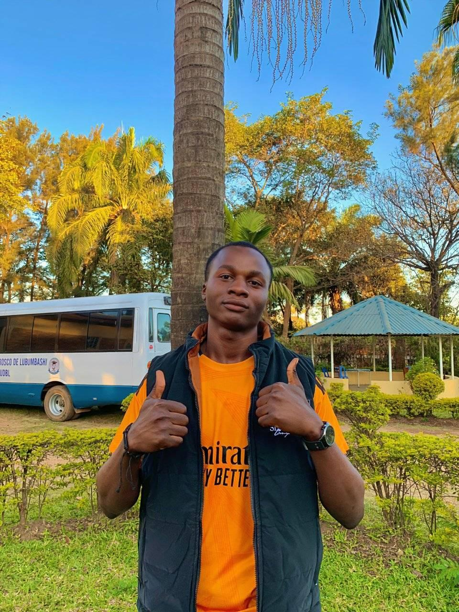

À Propos de Moi
Bonjour ! Je m'appelle Gabriel Nkulu et je suis un étudiant dynamique et motivé en Informatique à l'UDBL. Passionné par le développement web, l'intelligence artificielle, et le design graphique, je suis constamment à la recherche de nouvelles opportunités d'apprentissage et de défis stimulants.
Au cours de mes études, j'ai développé de solides compétences en programmation. Je suis une personne rigoureuse, créative et j'aime travailler en équipe pour atteindre des objectifs communs. Mon objectif est de contribuer à des projets innovants, trouver un stage, et maitriser le Framework Laravel.
Mes Compétences
| CATÉGORIE | COMPETENCES | NIVEAU |
|---|---|---|
| Programmation | HTML, CSS, JavaScript, Python | Avancé |
| Design | Figma, Photoshop (bases) | Intermédiaire |
| Langues | Français(natif), Anglais(fluide) | Avancé |
| Outils | Git, VS Code, Suite Office | Avance |
| Soft Skills | Communication, Résolution de problèmes, Autonomie | Expert |